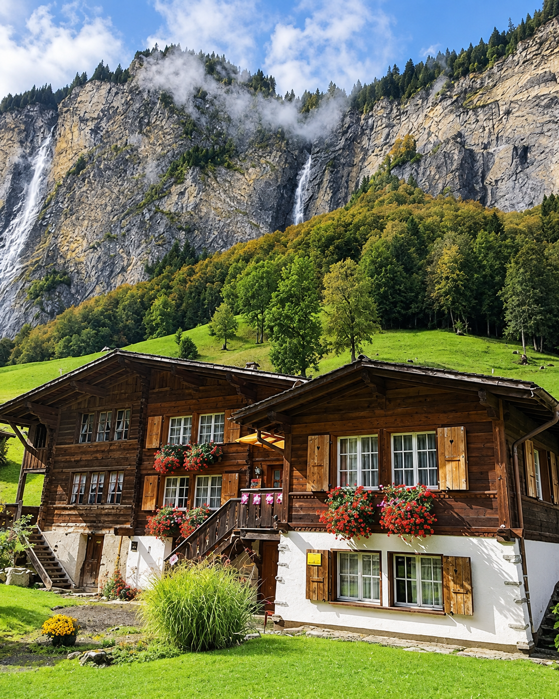
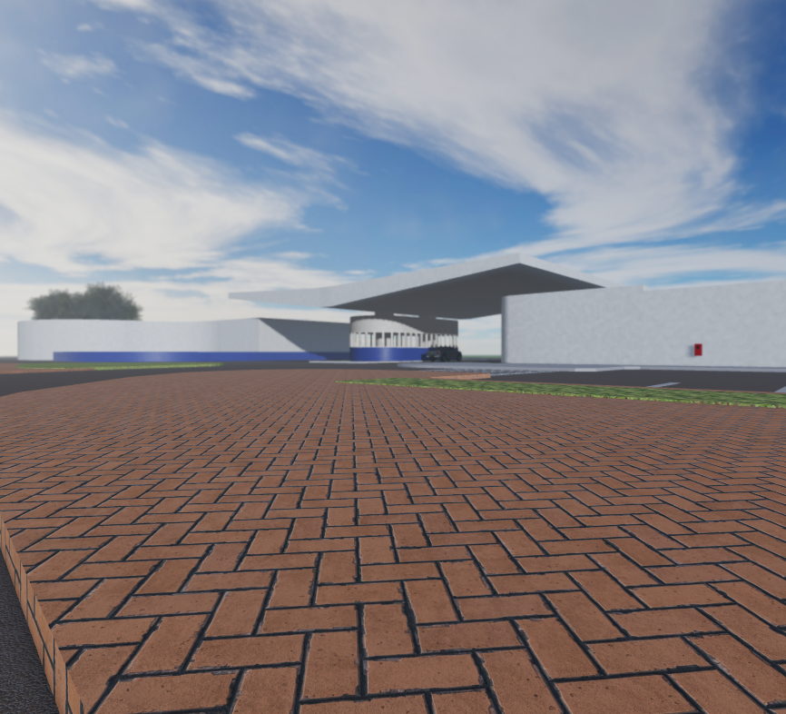

Artthur.
Roblox Builder & 3D Artist
Sempre criando mapas imersivos e bem otimizados para jogos no Roblox, com foco em qualidade visual e experiência do jogador.
Projetos
Aqui estão alguns dos meus projetos:



Contato
Entre em contato comigo: